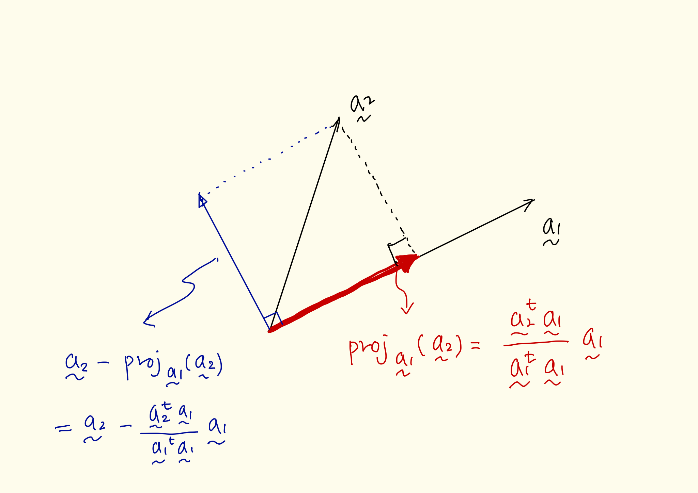
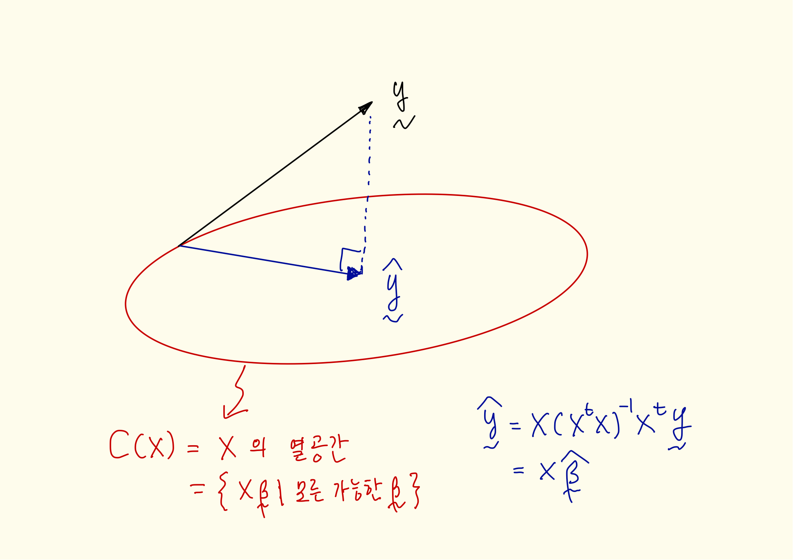

부록 B — 벡터공간
B.1 벡터공간의 정의와 의미
먼저 지금까지 우리가 배운 벡터의 개념을 일반화하여 다루기 위해서 벡터공간의 일반적 개념을 정의하고자 한다.
벡터는 숫자를 모아놓은 형태인 식 A.1 로 주로 나타내지만 이러한 벡터를 모아놓은 집합은 실벡터 공간(real vector space)이라고 한다. 즉, 식 A.1 의 벡터는 \(p\)-차원 실벡터(real vector)라고 한다.
지금부터 논의할 추상적인 벡터 공간(abstract vector space)은 어떤 집합이든 원소에 대한 더하기와 스칼라곱이 정의되어 있는 공간을 말한다.
이제부터 \(\RR\) 을 실수 전체 집합이라고 하자. 또한 \(\RR^n\) 을 \(n\)-차원 실벡터(real vector)의 집합이라고 하자. 또한 \(\RR^{n \times p}\) 을 \(n \times p\)-차원 행렬의 집합이라고 하자.
벡터공간(vector space) 은 어떤 집합 \(S\) 에 다음과 같은 두 개의 연산이 정의된 공간을 말한다.
두 개의 원소에 대한 더하기(addition, \(+\)) 연산의 정의되어 있다.
\[+ ~ ~ : S + S \rightarrow S \tag{B.1}\]
하나의 실수와 한 개의 원소에 대한 스칼라곱(scalar product, \(\cdot\)) 연산이 정의되어 있다.
\[\cdot ~ ~ : \RR \cdot S \rightarrow S \tag{B.2}\]
위에서 더하기 연산이 정의되어 있다는 의미는 다음에 주어진 규칙이 성립한다는 의미이다.
- 집합 \(S\) 가 연산에 대하여 닫혀있다 (closure).
\[ s_1 + b \in S \quad \forall s_1,b \in S \]
- 결합법칙이 성립한다 (Associativity).
\[ (s_1 + s_2) + s_3 = s_1 + (s_2 +s_3) \quad \forall s_1,s_2,s_3 \in S \]
- 항등원이 존재한다 (Neutral element).
\[ s + e = e + s = s \quad \exists e ~~\forall s \in S \]
- 역원이 존재한다 (Inverse element).
\[ s + i = i + s = 0 \quad \exists i ~~\ \forall s \in S \]
일반적으로 항등원(\(e\)) 는 \(0\) 으로 표시하며 역원(\(i\)) 는 \(-s\) 로 표시한다.
- 교환법칙이 성립한다 (Commutativity).
\[ s_1 + s_2 = s_2 + s_1 \quad \forall s_1,s_2 \in S \]
또한 위에서 스칼라곱 연산이 정의되어 있다는 의미는 다음에 주어진 규칙이 성립한다는 의미이다.
- 스칼라곱 연산의 분배법칙이 성립한다 (Distributivity).
\[ r_1(s_1+s_2) = r_1 s_1 + r_2 s_2,~~~ (r_1+r_2)s = r_1 s + r_2 s \quad \forall s_1,s_2 \in S, ~~ \forall r_1,r_2 in \RR \]
- 스칼라곱 연산의 결합법칙이 성립한다
\[ r_1(r_2s) = (r_1 r_2) s \quad \forall s \in S, ~~ \forall r_1,r_2 in \RR \]
- 스칼라곱 연산의 항등원이 존재한다 (Neutral element).
\[ 1 \cdot s = s \quad \forall s \in S \]
주의
벡터 공간에서 주의할 점은 두 벡터의 곱하기 가 정의되어 있다는 것이 아니라 하나의 스칼라와 하나의 벡터에 대한 스칼라 곱하기가 정의되어 있다는 것이다.
\[ \begin{bmatrix} 1 \\ 2 \end{bmatrix} \cdot \begin{bmatrix} 3 \\ 4 \end{bmatrix} =? \quad {but} \quad 3 \cdot \begin{bmatrix} 1 \\ 2 \end{bmatrix} = \begin{bmatrix} 3 \\ 6 \end{bmatrix} \]
두 벡터의 곱하기 는 내적(inner product) 란 이름으로 따로 정의한다. 또한 두 벡터의 곱셈이 유일하게 정의되지 않는다는 점에 유의하자. 예를 들어 벡터의 곱셈은 외적(cross product) 이라는 이름으로 정의된다.
이 강의에서는 스칼라로 실수만 사용하고 벡터공간은 실벡터공간(real vector space)만 고려할 것이다. 하지만 벡터공간은 실벡터가 아닌 다른 일반적인 집합에 대해서도 정의할 수 있음을 유의하자. 예를 들어 \(n\)-차원 다힝식들을 모두 모아 놓은 집합은 벡터공간이다. 또한 연속인 함수들을 모아 놓은 집합도 벡터공간이다.
B.2 벡터의 선형독립
벡터공간에 속한 벡터 \(\pmb v_1, ~~ \pmb v_2, ~~\dots ~~, \pmb v_n\) 의 선형결합(또는 선형결합, linear combination)이란 각 벡터에 스칼라를 곱하여 더한 것들이다.
즉 다음과 같은 형태의 식을 벡터 \(\pmb v_1, ~~ \pmb v_2, ~~\dots ~~, \pmb v_n\)의 선형결합(linear combination)이라고 한다:
\[ r_1 \pmb v_1 + r_2 \pmb v_2 + \cdots + r_n \pmb v_n, \quad r_1,r_2,\dots, r_n \in \RR \tag{B.3}\]
정의 B.1 (벡터의 선형독립과 선형종속) 벡터공간에 속한 벡터 \(\pmb v_1, ~~ \pmb v_2, ~~\dots ~~, \pmb v_n\) 가 있다고 하자. 만약 다음 식이 만약 모두 \(0\)인 \(n\)개의 스칼라 \(x_1,x_2,\dots,x_n\)에 대해서만 성립하면 \(n\)개 벡터 \(\pmb v_1, ~~ \pmb v_2, ~~\dots ~~, \pmb v_n\) 들은 선형독립(linearly independent)라고 한다.
\[ x_1 \pmb v_1 + x_2 \pmb v_2 + \dots + x_n \pmb v_n = \pmb 0 \quad \Longleftrightarrow x_1 = x_2 = \dots = x_n =0 \tag{B.4}\]
또한 벡터 \(\pmb v_1, ~~ \pmb v_2, ~~\dots ~~, \pmb v_n\) 가 선형독립이 아니면 선형종속(linear dependent)라고 한다. 벡터 \(\pmb v_1, ~~ \pmb v_2, ~~\dots ~~, \pmb v_n\) 가 선형종속이면 모두 0이 아닌 \(x_1,x_2,\dots,x_n\) 이 존재하여 다음이 성립한다는 것이다.
\[ \exists~ x_1,x_2,\dots,x_n \in \RR \text{ s.t. } (x_1,x_2,\dots,x_n) \ne \pmb 0,\quad \pmb v_1 + x_2 \pmb v_2 + \dots + x_n \pmb v_n = \pmb 0 \tag{B.5}\]
\(\blacksquare\)
예를 들어 다음과 같이 주어진 3개의 3-차원 벡터들은 선형종속이다.
\[ \pmb v_1 = \begin{bmatrix} 1\\ 2\\ 3 \end{bmatrix}, \quad \pmb v_2 = \begin{bmatrix} 1\\ 0\\ 1 \end{bmatrix}, \quad \pmb v_3 = \begin{bmatrix} 3\\ 2\\ 5 \end{bmatrix} \tag{B.6}\]
왜냐하면 다음과 같이 모두 0이 아닌 스칼라에 의해서 다음 식이 성립하기 떄문이다. 즉 벡터 \(\pmb v_3\)는 \(\pmb v_2\) 에 2를 곱하여 \(\pmb v_1\)에 더한 값과 같다.
\[ \pmb v_3 = \pmb v_1 + 2 \pmb v_2 \quad \Longleftrightarrow \quad \pmb v_1 + 2 \pmb v_2 -\pmb v_3 = 0 \]
이제 다음과 같이 주어진 3개의 3-차원 벡터들은 선형독립이다. 즉 3개 벡터의 선형 조합이 0이 될 수 있도록 만드는 스칼라는 모두 0인 경우 밖에 없다.
\[ \pmb v_1 = \begin{bmatrix} 1\\ 2\\ 3 \end{bmatrix}, \quad \pmb v_2 = \begin{bmatrix} 1\\ 0\\ 1 \end{bmatrix}, \quad \pmb v_3 = \begin{bmatrix} 3\\ 2\\ 4 \end{bmatrix} \tag{B.7}\]
이제 다음과 같이 주어진 4개의 3-차원 벡터들은 선형종속이다.
\[ \pmb v_1 = \begin{bmatrix} 1\\ 2\\ 3 \end{bmatrix}, \quad \pmb v_2 = \begin{bmatrix} 1\\ 0\\ 1 \end{bmatrix}, \quad \pmb v_3 = \begin{bmatrix} 3\\ 2\\ 4 \end{bmatrix} \quad \pmb v_4 = \begin{bmatrix} 0\\ 0\\ 1 \end{bmatrix} \tag{B.8}\]
\(\pmb v_3\) 가 다음과 같이 다른 벡터의 선형결합으로 나타난는 것을 보여준다.
\[ \pmb v_3 = \begin{bmatrix} 3\\ 2\\ 4 \end{bmatrix} = (1)\pmb v_1 + (2)\pmb v_2 + (-1)\pmb v_4 = (1) \begin{bmatrix} 1\\ 2\\ 3 \end{bmatrix} + (2) \begin{bmatrix} 1\\ 0\\ 1 \end{bmatrix} + (-1)\begin{bmatrix} 0\\ 0\\ 1 \end{bmatrix} \]
식 B.8 와 같이 3차원 벡터가 4개인 경우 벡터의 값에 관계없이 선형종속으로 나타난다. 이러한 사실은 \(\RR^n\)의 \(n+1\) 개의 벡터는 항상 선형종속이라는 정리의 결과이다.
즉, \(\RR^n\)에서 \(n\)개보다 더 많은 벡터들은 항상 선형종속이다.
B.3 역행렬
정방행렬 \(\pmb A\) 의 역행렬(inverse matrix) \(\pmb A^{-1}\)는 다음과 같은 성질을 만족하는 행렬이다.
\[ \pmb A \pmb A^{-1} = \pmb A^{-1} \pmb A = \pmb I \]
역행렬은 언제나 존재하는 것은 아니다. 만약 행렬 \(\pmb A\)가 역행렬을 가지면 이를 \(\pmb A^{-1}\)로 표시한다. 또한 역행렬이 존재하면 정칙행렬(non-singular matrix)이라고 한다.
역행렬은 존재하는 조건은 행렬식(determinant)이 0이 아니어야 한다.
B.4 행렬의 계수
행렬의 계수(rank)란 일차 독립인 열들의 최대 수 또는 일차 독립인 행들의 최대 수로 정의된다
\[ rank(\pmb A) = rk(\pmb A) = dim(Col(\pmb A)) = dim(Row(\pmb A)) \] 꼭 기억해야 할 것은 행렬의 계수는 열들을 이용하여 구한 계수와 행들을 이용하여 구한 계수가 같다는 것이다. 즉, 행렬의 계수는 열의 계수와 행의 계수 중 하나만 구해도 된다는 것이다.
예를 들어 식 B.6 에 주어진 3 개의 벡터를 열로 하는 행렬의 계수는 2이다. 왜냐하면 선형종속인 벡터가 하나 있기 때문이다.
\[ \pmb A = \begin{bmatrix} 1 & 1 & 3\\ 2 & 0 & 2\\ 3 & 1 & 5 \end{bmatrix} \quad \rightarrow \quad rank(\pmb A) = 2 \]
위에 주어진 행렬 \(\pmb A\)의 행들을 고려하면 첫 번째 행과 두 번째 행의 합이 세 번째 행으로 나타난다. 즉, 서로 독립인 행의 최대 개수는 2 이며 이는 서로 독립인 열의 최대 개수와 같다. 따라서 행렬 \(\pmb A\)의 계수는 2이다.
다음으로 식 B.7 에 주어진 3 개의 벡터를 열로 하는 행렬의 계수는 3이다. 3개의 열벡터와 3개의 행벡터들은 모두 선형독립이다.
\[ \pmb A = \begin{bmatrix} 1 & 1 & 3\\ 2 & 0 & 2\\ 3 & 1 & 4 \end{bmatrix} \quad \rightarrow \quad rank(\pmb A) = 3 \] 이제 식 B.8 주어진 4개의 벡터로 이루어진 행렬의 계수는 3이다. 왜냐하면 4개의 열벡터 중 3개의 열벡터는 선형독립이지만 4번째 열벡터는 선형종속이기 때문이다.
\[ \pmb A = \begin{bmatrix} 1 & 1 & 3 & 0\\ 2 & 0 & 2 & 0\\ 3 & 1 & 4 & 1 \end{bmatrix} \quad \rightarrow \quad rank(\pmb A) = 3 \]
행렬의 열과 행의 개수가 다를 때 행렬의 계수는 열의 개수와 행의 개수 중 작은 값보다 같거나 작다 예를 들어 \(n \times p\) 행렬의 계수는 \(min(n,p)\) 와 같거나 작다.
\[ A \in \RR^{n \times p} \quad \rightarrow \quad rank(\pmb A) \le min(n,p) \]
다음은 행렬의 계수에 관련된 주요 공식이다.
\(rank(\pmb A ) = rank(\pmb A^t)\)
행렬 \(\pmb A\) 가 정방행렬이고 계수가 \(n\) 이면 역행렬이 존재한다(정칙행렬).
또한 더 나아가 \(\pmb A\) 가 정칙행렬이라는 사실은 아래 나열된 조건들과 동치(equivalance)이다.
\(\quad \Leftrightarrow\) \(\pmb A\) 의 열들이 일차독립이다.
\(\quad \Leftrightarrow\) \(\pmb A\) 의 행들이 일차독립이다.
\(\quad \Leftrightarrow\) \(\pmb A\) 의 계수가 \(n\) 이다.
\(\quad \Leftrightarrow\) \(\pmb A\) 의 행렬식이 0이 아니다.
B.5 생성집합과 기저
벡터공간 \(V\) 의 벡터 \(\pmb v_1,\pmb v_n, \dots, \pmb v_m\) 의 선형결합을 모두 모은 집합
\[ W = span\{\pmb v_1,\pmb v_2, \dots, \pmb v_m \} = \{r_1\pmb v_1 + r_2 \pmb v_2 + \cdots+ r_m \pmb v_m: r_1,r_2,\dots,r_m \in \RR \}\]
을 벡터 \(\pmb v_1,\pmb v_n, \dots, \pmb v_m\) 의 생성(span)이라고 하며 \(W\) 의 생성집합(generating set, spanning set) 이라고 한다.
또한 어떤 벡터공간의 생성집합에 속한 벡터들이 선형독립일 때 이 생성집합을 기저 (basis)라고 한다.
만약 주어진 벡터 공간의 부분집합이 다시 벡터공간의 정의를 만족한다면 이를 부분공간(subspace)이라고 한다. 위에서 정의한 생성집합 \(W\)는 벡터공간 \(V\)의 부분공간이다.
B.6 벡터공간의 차원
\(\RR^n\) 의 모든 기저는 \(n\)개의 원소를 갖는다.
임의의 벡터공간 \(V\)에 대해서 \(V\)의 부분집합 \(B = \{\pmb b_1,\dots,\pmb b_n\}\) 가 \(V\)의 기저라고 하면 다음을 보일 수 있다.
- \(V\) 의 모든 벡터들은 \(\pmb b_1,\dots,\pmb b_n\) 의 선형결합으로 나타낼 수 있으며 유일하다.
- \(V\) 의 부분집합이 \(n\) 개보다 많은 벡터를 포함하면 이 부분집합의 벡터들은 선형종속이다.
- \(V\) 의 또 다른 기저 \(C=\{\pmb c_1,\dots,\pmb c_m \}\) 가있다면 \(m=n\) 이다.
벡터공간 \(V\)의 차원(dimension) 은 기저의 개수로 정의되며 \(dim(V)\)로 표시한다.
B.7 행렬의 열공간과 행공간
\(n \times p\) 행렬 \(\pmb A\) 에 의하여 생성되는 열공간(column space) \(C(\pmb A)\)는 행렬 \(\pmb A\)를 구성하는 열벡터의 선형조합으로 나타낼 수 있는 모든 벡터들의 집합을 말한다.
\[ C(\pmb A) = \{ {\pmb y } | {\pmb y} = {\pmb A} {\pmb x}, {\pmb x} \in \RR^p \} \subset \RR^n\]
\(n \times p\) 행렬 \(\pmb A\) 에 의하여 생성되는 영공간(null space) \(N(\pmb A)\) 는 다음과 같이 정의되는 벡터들의 집합을 말한다.
\[ N(\pmb A) = \{ {\pmb x} | {\pmb A} {\pmb x} = {\pmb 0} \text{ for } {\pmb x} \in \RR^p \} \subset \RR^n\]
벡터공간과 영공간은 다음과 같은 성질을 가진다.
- \(rank(\pmb A) = \text{ dimension of } C(\pmb A) = dim[C(\pmb A)]\)
- \(dim[C(\pmb A)] + dim[N(\pmb A)] = n\)
B.8 두 벡터의 사영
선형독립인 두 벡터 \(\pmb a_1\)과 \(\pmb a_2\) 가 있다고 하자. 벡터 \(\pmb a_1\)과 같은 방향을 가지면서 벡터 \(\pmb a_2\)에 가장 가까운 벡터를 \(proj_{\pmb a_1} (\pmb a_2)\) 라고 정의하고 이를 벡터 \(\pmb a_1\) 방향으로 벡터 \(\pmb a_2\) 의 사영(projection)이라고 부른다.
그러면 이러한 사영은 어떻게 구할 수 있나? 벡터 \(\pmb a_2\) 의 사영은 벡터 \(\pmb a_1\) 방향에 있으므로 어떤 실수 \(c\) 가 있어서 다음과 같이 표시할 수 있다.
\[ proj_{\pmb a_1} (\pmb a_2) = c \pmb a_1 \]
이제 사영 \(c \pmb a_1\)과 벡터 \(\pmb a_2\)의 거리 \(d(c)\) 를 생각하면 다음과 같다.
\[ \begin{aligned} d^2(c) & = \norm{\pmb a_2 - c \pmb a_1}^2 \\ & = (\pmb a_2 - c \pmb a_1)^t(\pmb a_2 - c \pmb a_1) \\ & = \pmb a^t_2 \pmb a_2 -2 c \pmb a_2^t \pmb a_1 + c^2 \pmb a^t_1 \pmb a_1 \end{aligned} \]
위에서 \(\norm{\pmb a}\) 는 벡터 \(\pmb a\)의 길이를 나타낸다.
\[ d(\pmb a) = \norm{\pmb a} = \sqrt{\pmb a^t \pmb a} \]
상수 \(c\) 는 거리 \(d(c)\)를 최소로 만드는 수이다. \(d^2(c)\)은 \(c\) 에 대하여 미분 가능한 2차 함수이며 아래로 볼록한 함수이므로 이를 미분하여 \(c\) 를 구할 수 있다.
\[ \pardiff{d^2(c)}{c} = - 2\pmb a_2^t \pmb a_1 + 2c \pmb a^t_1 \pmb a_1 =0 \]
위의 방적식으로 부터 \(c\)를 얻고 \[ c= \frac{\pmb a_2^t \pmb a_1 }{\pmb a^t_1 \pmb a_1} \]
다음과 같이 벡터 \(\pmb a_1\) 방향으로 벡터 \(\pmb a_2\) 의 사영을 나타낼 수 있다.
\[ proj_{\pmb a_1} (\pmb a_2) = \frac{ \pmb a_2^t \pmb a_1} {\pmb a_1^t \pmb a_1} \pmb a_1 \tag{B.9}\]
이제 위의 두 벡터의 사영을 이용하면 벡터 \(\pmb a_1\) 과 직교하는 벡터 \(\tilde {\pmb q}_2\)를 다음과 같이 찾을 수 있다.
\[ \tilde {\pmb q}_2 = \pmb a_2 - proj_{\pmb a_1} (\pmb a_2) = \pmb a_2 - \frac{\pmb a_2^t \pmb a_1} {\pmb a_1^t \pmb a_1} \pmb a_1 \]
두 벡터 \(\pmb a_1\)와 \(\tilde {\pmb q}_2\)의 직교성은 다음과 같이 보일 수 있다.
\[ \begin{aligned} \pmb a_1^t \tilde {\pmb q}_2 & = \pmb a_1^t \left ( \pmb a_2 - \frac{ \pmb a_2^t \pmb a_1} {\pmb a_1^t \pmb a_1} \pmb a_1 \right ) \notag \\ & = \pmb a_1^t \pmb a_2 - \frac{ \pmb a_2^t \pmb a_1} {\pmb a_1^t \pmb a_1} \pmb a_1^t \pmb a_1 \notag \\ & = \pmb a_1^t \pmb a_2 - \pmb a_2^t \pmb a_1 \notag \\ & = 0 \end{aligned} \tag{B.10}\]
이제 두 벡터 \(\pmb q_1\)과 \(\pmb q_2\) 를 다음과 같이 정규직교벡터로 만들 수 있다.
\[ \begin{aligned} \pmb q_1 & = \pmb a_1 / \norm{\pmb a_1 } \\ \pmb q_2 & = \tilde {\pmb q}_2 / \norm{\tilde {\pmb q}_2} \end{aligned} \]
B.9 최소제곱법과 사영
회귀계수벡터의 값을 구하는 최소제곱법의 기준을 다시 살펴보자.
\[ \min_{\pmb \beta } ( \pmb y - \pmb X \pmb \beta )^t( \pmb y - \pmb X \pmb \beta ) \]
위에서 \(\pmb X \pmb \beta\)는 행렬 \(\pmb X\)의 열벡터 \(\pmb x_1, \pmb x_2, \dots, \pmb x_p\) 로 이루어진 선형조합이다.
\[ \pmb X \pmb \beta = [\pmb x_1~ \cdots \pmb x_p]\pmb \beta = \beta_1 \pmb x_1 + \cdots + \beta_p \pmb x_p \]
행렬 \(\pmb X\)의 열벡터로 생성돤 공간을 \(C(\pmb X)\) 라고 하자
\[ C(\pmb X) = span \{ \pmb x_1, \dots, \pmb x_p \} = \{ \pmb X \pmb \beta ~|~ \pmb \beta \in \RR^p \}\]
따라서 최소제곱법으로 구한 회귀계수 벡터 \(\hat {\pmb \beta}\)는 반응값 벡터 \(\pmb y\) 와 \(\pmb X {\pmb \beta}\)의 거리가 최소가 되도록 만들어 준다.
\[ \min_{\pmb \beta } ( \pmb y - \pmb X \pmb \beta )^t( \pmb y - \pmb X \pmb \beta ) = ( \pmb y - \pmb X \hat {\pmb \beta} )^t( \pmb y - \pmb X \hat {\pmb \beta} ) \] \[ \hat {\pmb \beta} = (\pmb X^t \pmb X)^{-1} \pmb X^t \pmb y \]
따라서 예측값 벡터 \(\hat {\pmb y}\) 는 행렬 \(\pmb X\)의 열벡터로 생성한 열공간 \(C(\pmb X)\) 방향으로 반응값 벡터 \(\pmb y\)를 사영한 벡터이다.
\[ \hat {\pmb y} = \pmb X \hat {\pmb \beta} = \pmb X(\pmb X^t \pmb X)^{-1} \pmb X^t \pmb y \]
위에서 행렬 \(\pmb X(\pmb X^t \pmb X)^{-1} \pmb X^t\)를 열공간 \(C(\pmb X)\)의 사영행렬(projection matrix)라고 부른다. 사영행렬의 정의는 부록 F 에서 공부한다.
\[ \pmb H = \pmb X(\pmb X^t \pmb X)^{-1} \pmb X^t \tag{B.11}\]
